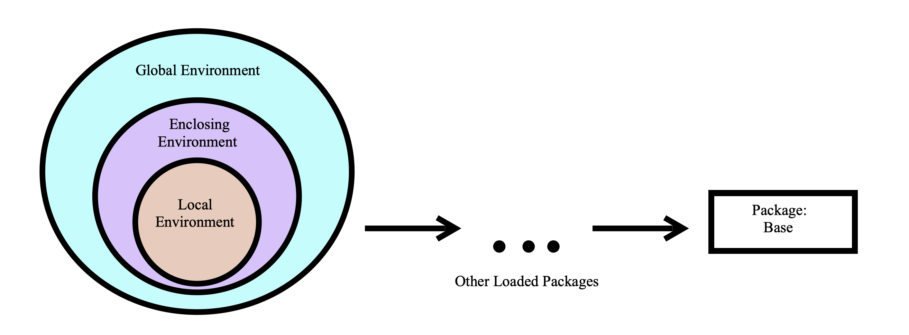

Chapter 5 Functions
In R we have functions, functions are another type of object in R. We use functions in order to preform a series of tasks repeatedly, or preform these tasks in different settings. They can make our code much more efficient. We can build our own functions or we can use built in functions. Here we describe both types and their properties. Parts of this chapter where adapted by John Blischak, Daniel Chen, Harriet Dashnow, and Denis Haine (2016) and Vries and Meys (2015).
5.1 Build Your Own Function
To define a function, a name is assigned and the keyword function is used to denote the start of the function and its argument list. Functions are created using the function() directive and are stored as R objects just like anything else. In particular, they are R objects of class function. Functions can be passed as arguments to other functions. Functions can be nested, so that you can define a function inside another function.
Below is the general template
In this template we have the following key components
function_name: This is the actual name of the function. It is stored in R environment as an object with this name.function: A directive which tells R a function is being created.arg: An argument is a placeholder. When a function is invoked, you pass a value to the argument. Arguments are optional; that is, a function may contain no arguments. Also arguments can have default values.function body: The function body contains a collection of statements that defines what the function does.return_value: The output value of the function. Ifreturn(return_value)is not supplied then the return value of a function is the last expression in the function body to be evaluated. Your function can only return one object. This object can be any class of object you desire, like a vector, list or data frame, but you may only return one object.
Below is an example of converting a temperature from Fahrenheit to Celsius.
In this example the function name is fahrenheit_to_celsius, there is only one input or argument, temp_F, and the output is the object temp_C.
Now if we would like to “call” this function we can simply put into the command console the function name and desired input.
## [1] 30.55556What would happen if we tried to call this function without supplying an input? This would result in an error.
Error in fahrenheit_to_celsius() :
argument "temp_F" is missing, with no defaultWith functions we can define function arguments to have default values. These default values are used only if the user did not supply an argument value. Observe the example below.
# An example function
example_func = function(a = 1, b){
c = a + b
d = c + 1
# returns a+b+1
return(d)
}
# Call example function
example_func(a= 2, b= 3)## [1] 6## [1] 5Further notice that R has three ways to match function inputs to the formal arguments of the function definition. R attempts to match inputs to arguements in the following order.
by complete name
by partial name (matching on initial n characters of the argument name)
by position
After running a function command R first attempts to match arguments by complete name, then by partial name, and then by position. If it unable to match inputs to an argument it then uses the default argument value, if one exists.
Observe:
## [1] 6## [1] 6## [1] 65.2 Lexical Scoping
With all these examples of functions, notice that in your global environment, only the function name was added. The function arguments, return values, and all objects defined inside the function are not a part of the global environment. This is not a mistake. We can define objects locally, or temporarily, when using functions. These objects are created and used only when the function is running, and quickly discarded once the function finishes. They never are listed in the global environment.
Sometimes you may have an object defined in multiple places. When this happens, R uses a system of rules to determine which definition it will use. In other words, how and where we define an object determines the objects scope, or range of places that we can use this object. The system of rules R uses for searching for objects is called lexical scoping, as opposed to other types of scoping. With this system R looks for objects that are called in a function within the itself, then any enclosing environments, then the global environment, and lastly looking at objects in packages or built-in objects. This is the same searching method that we see in Python and Java.

5.3 Built-In Functions
R has functions built-in to it just like excel. You can call these built-in function at any time. We have already seen a few of these functions.
c()class()matrix()data.frame()
Below are a few more examples using the built-in dataset mtcars, we will use mtcars$mpg as a vector of data to analyze.
mean(): Takes in a vector, and returns the mean of the values in the vector.
## [1] 20.09062median(): Takes in a vector, and returns the median of the values in the vector.
## [1] 19.2var(): Takes in a vector, and returns the variance of the values in the vector.
## [1] 36.3241sqrt(): If you give it a vector, it returns the square root of each element in the vector. If you give it a single number, it returns the square root of the number.
## [1] 4.582576 4.582576 4.774935 4.626013 4.324350 4.254409 3.781534 4.939636
## [9] 4.774935 4.381780 4.219005 4.049691 4.159327 3.898718 3.224903 3.224903
## [17] 3.834058 5.692100 5.513620 5.822371 4.636809 3.937004 3.898718 3.646917
## [25] 4.381780 5.224940 5.099020 5.513620 3.974921 4.438468 3.872983 4.626013sd(): Takes in a vector, and returns the standard deviation of the values in the vector.
## [1] 6.026948range(): Takes in a vector, and returns the minimum AND maximum of the values in the vector.
## [1] 10.4 33.9quantile(): Takes in a vector as the first argument, and a vector of values between 0 and 1 (any number of values) for the second argument. It will return the corresponding quantiles of the values in the first vector specified by the second vector.
To get the \(10^{th}\) and \(90^{th}\) percentiles:
## 10% 90%
## 14.34 30.09summary(): You can give this a dataset OR a vector. It returns some summary information about the values in the dataset or vector.
## Min. 1st Qu. Median Mean 3rd Qu. Max.
## 4.0 12.0 15.0 15.4 19.0 25.0One of the great advantages of using R is that there is a ton of resources available to learn about it. However, this can also be a disadvantage because of the vast amount of information available. The best and first resource you should look at when trying learn more about R functions is the Help files.
5.4 Help Files
The Help files are in R and can be viewed from the lower right window by clicking the Help tab. Here you can search by function name to read about it. Each built in function has a help files, sometimes similar functions are grouped together in the same file. The R Help Files are typically the best resource to get help.
The R Help files follow a fairly standard outline. You find most of the following sections in every R Help file:
Title: A one-sentence overview of the function.
Description: An introduction to the high-level objectives of the function, typically about one paragraph long.
Usage: A description of the syntax of the function (in other words, how the function is called). This is where you find all the arguments that you can supply to the function, as well as any default values of these arguments.
Arguments: A description of each argument. Usually this includes a specification of the class (for example, character, numeric, list, and so on). This section is an important one to understand, because arguments are frequently a cause of errors in R.
Details: Extended details about how the function works, provides longer descriptions of the various ways to call the function (if applicable), and a longer discussion of the arguments.
Value: A description of the class of the value returned by the function.
See also: Links to other relevant functions. In most of the R editors, you can click these links to read the Help files for these functions.
Examples: Worked examples of real R code that you can paste into your console and run.
An alternative way to view a functions help file is by typing ? followed by the function name, or by typing help(function_name).
If you are not sure exactly which function you want, you can use ?? followed by what you believe the function name is to look at a list of functions.
5.5 The … Argument
There is a special argument function ... that can be used. Sometimes we call a function within a function that has a different set of arguments. We can use the ... argument as a general placeholder for passing along any additional arguments in a function call.
# Using the ... argument
# This function calls fun2
fun1 = function(x, ...){
y = fun2(...)
z = x + y
return(z)
}
# Define fun2
fun2 = function(a){
b = a^2
return(b)
}
# Returns 1 + 2^2 = 5
fun1(1, 2)## [1] 5We can also use the ... arguement in a nested fashion.
fun1 = function(x, ...){
y = fun2(...)
z = x+ y
return(z)
}
fun2 = function(a, ... ){
b = fun3(...)
c = a^2 + b
return(c)
}
fun3 = function(n){
n = sqrt(n)
return(n)
}
# Returns: 1 + 2^2 + sqrt(4) = 7
fun1(1, 2, 4)## [1] 7## [1] 7When using the ... argument it is customary to always place ... at the end of a function argument list, as it can be difficult for R to determine which arguments are to be passed to the next function. If possible, it is good practice to explicitly define the arguments to avoid an error.
References
John Blischak, Daniel Chen, Harriet Dashnow, and Denis Haine. 2016. “Software Carpentry: Programming with R.version 2016.06.” 2016. https://swcarpentry.github.io/r-novice-inflammation/02-func-R/index.html.
Vries, Andrie de, and Joris Meys. 2015. R for Dummies. Hoboken, New Jersey: John Wiley & Sons, Inc. https://www.dummies.com/programming/r/how-to-use-the-r-help-files/.